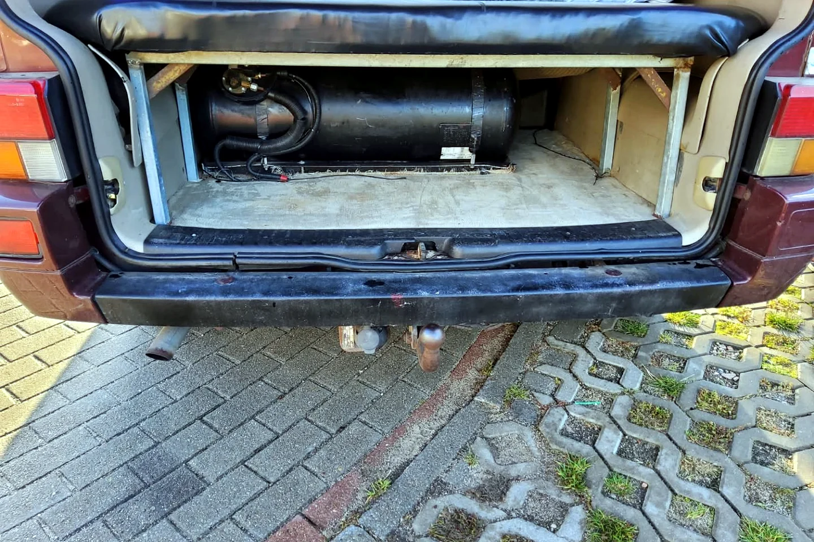

Alte Gasanlage raus aus dem Kofferraum — der Umbau zum Reserveradplatz

Der Rote konnte mit Benzin und Gas fahren. Praktisch beim Tanken — weniger praktisch war der Platz, den die alte Gasanlage im Kofferraum belegte. Ein großer Teil des wertvollen Hecks war damit dauerhaft blockiert. Für einen Camper, in dem ich wohnen und reisen wollte, war das auf Dauer keine gute Lösung.
Der Plan: Gastank nach unten
Unter dem Fahrzeug gab es den Platz des Reserverads. Genau dorthin sollte die Gasanlage umziehen. Das Ziel war klar: oben im Kofferraum Stauraum zurückgewinnen, ohne auf den Gasbetrieb des Motors zu verzichten. Auf den Fotos erkennt man beide Seiten der Geschichte — den Tank im Heck und später die Arbeiten am Boden beziehungsweise am neuen Einbauort.
So ein Umbau ist weit mehr als „Tank abschrauben und woanders festmachen“. Befestigung, Leitungen, Schutz vor Beschädigung, Abstand zu Wärmequellen, Bodenfreiheit, Korrosion, Dichtigkeit und die vorgeschriebenen Prüfungen müssen zusammenpassen. Außerdem muss geklärt sein, was mit dem Reserverad geschieht, wenn sein Platz neu genutzt wird.
Was der freie Kofferraum gebracht hat
Nach dem Umbau war der Unterschied sofort spürbar. Dort, wo vorher Technik den Raum bestimmte, konnten Gepäck und Ausrüstung sinnvoller untergebracht werden. Zusammen mit der zusätzlichen Stauraumebene wurde das Heck endlich zu dem, was ich brauchte: ein gut nutzbarer Lagerraum statt eines Kompromisses um den Tank herum.
Jeder Umbau hat eine Gegenseite
Mehr Platz oben bedeutet Verantwortung unten. Der neue Einbauort muss bei jeder Kontrolle mitgedacht werden. Auch das fehlende Reserverad beziehungsweise seine alternative Unterbringung gehört zur Reiseplanung. Genau das habe ich beim Ausbau gelernt: Es gibt selten eine Lösung ohne Folgen. Gute Lösungen sind die, deren Folgen man kennt und akzeptiert.
Für meinen Roten war der Umbau trotzdem ein wichtiger Schritt. Die Technik blieb Teil des Fahrzeugs, aber sie bestimmte nicht länger meinen gesamten Kofferraum. Und in einem kleinen Camper ist zurückgewonnener Platz fast so wertvoll wie ein zusätzlicher Raum.
Bis bald und immer gute Fahrt,
eure Tussy 💛